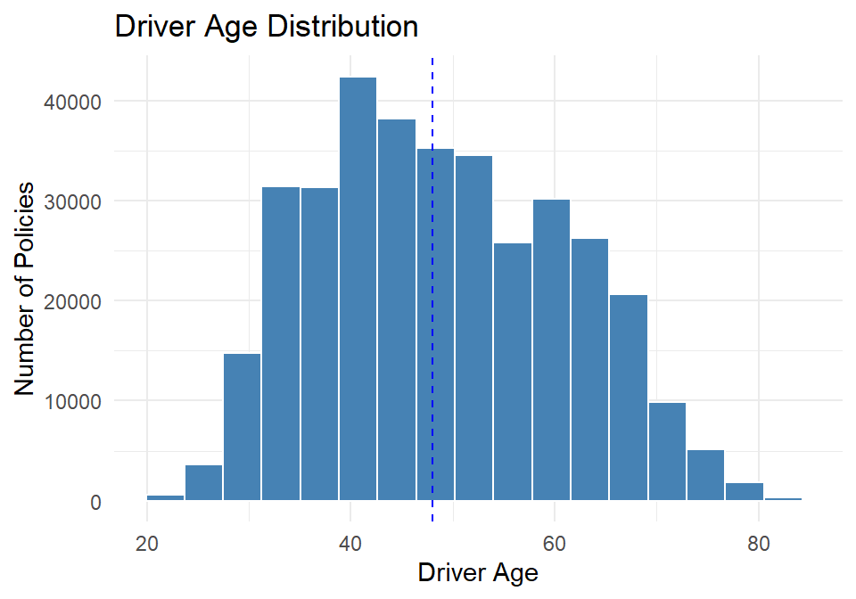
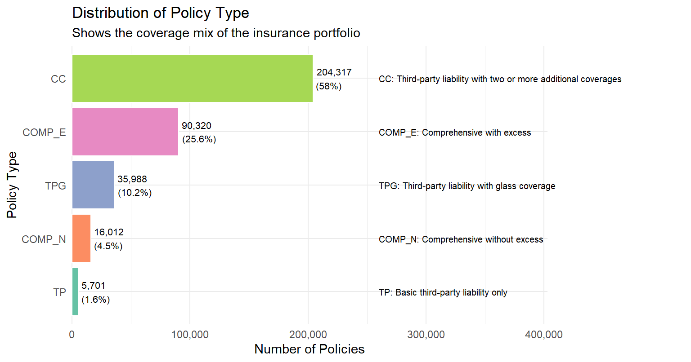
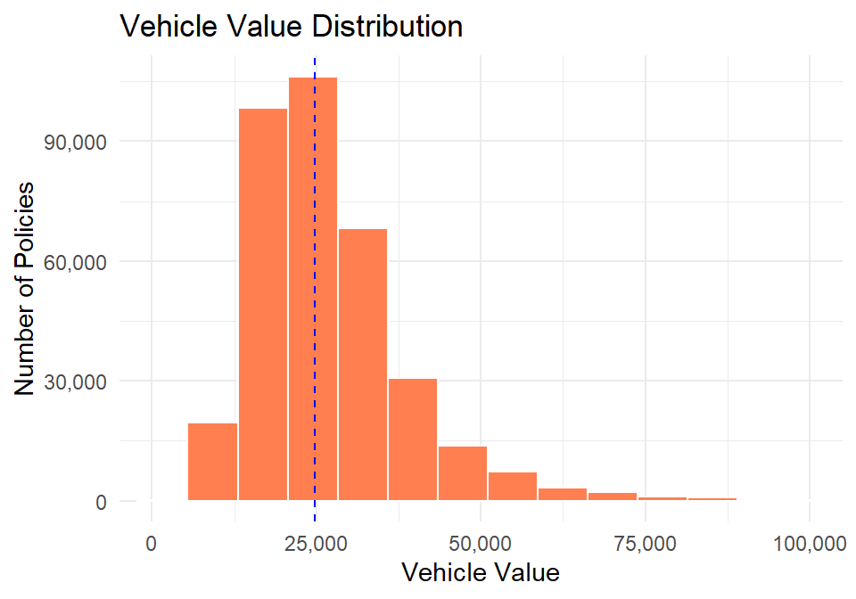
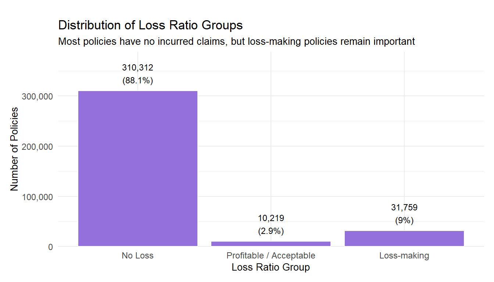
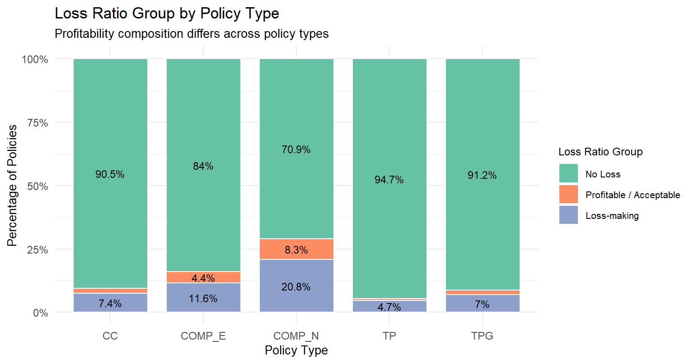
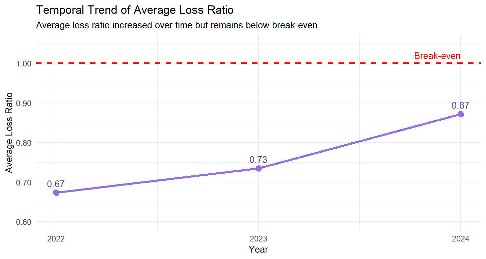
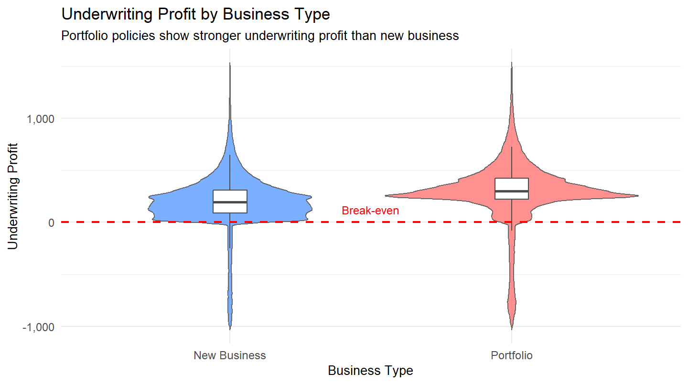
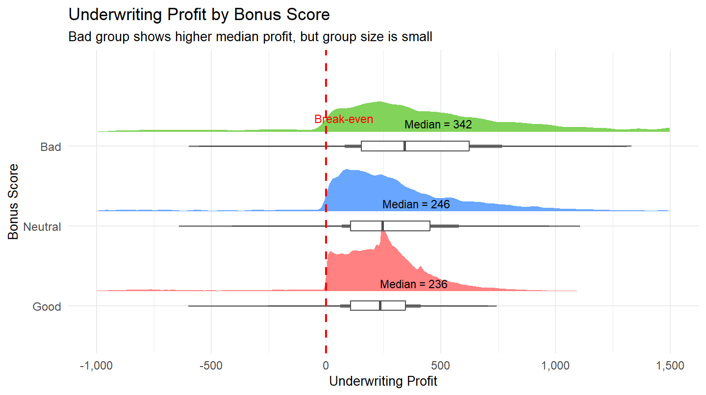
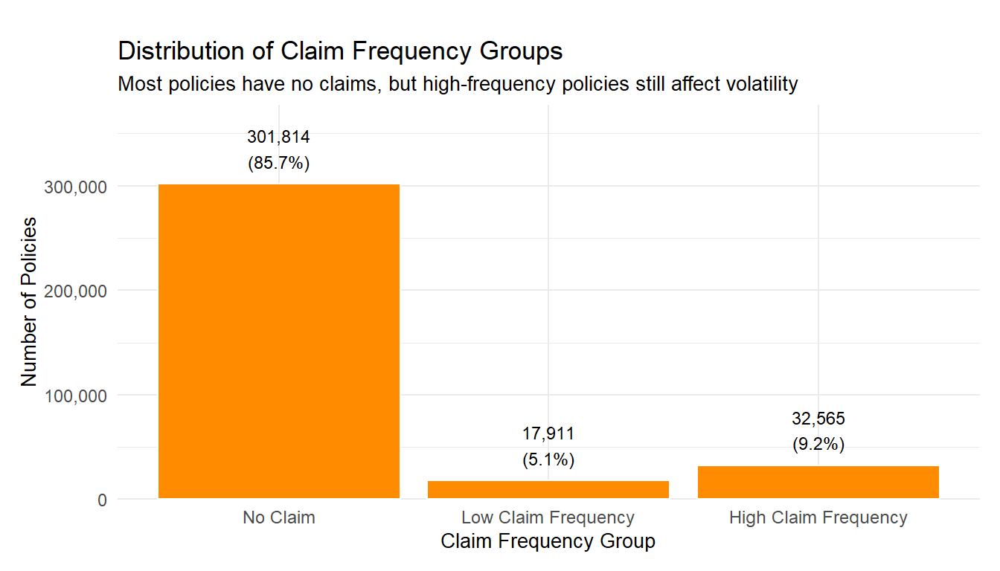
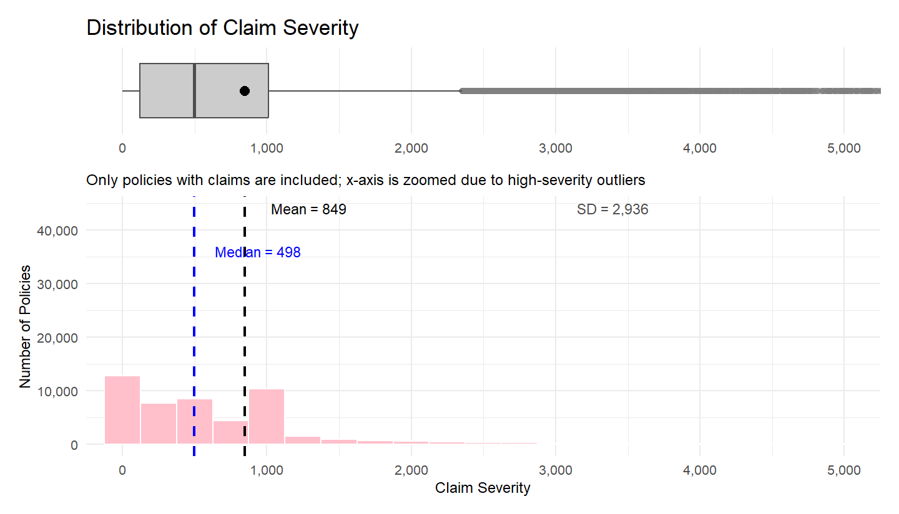

Motor Insurance Portfolio Profitability and Volatility
2026-05-01
Serene Cheng
ISSS608 Visual Analytics and Applications
May 2026
Insurers need to understand which portfolio segments drive poor profitability and claim volatility.
This study aims to:
Dataset used:
Derived measures:
loss_ratio = total_incurred / total_premiumunderwriting_profit = total_premium - total_incurredclaim_frequency = total_claims / total_exposureclaim_severity = total_incurred / total_claims
Key insight:


Key insight:

Key insight:

Key insight:

Key insight:

Key insight:

Key insight:

Key insight:

Key insight:
Recommendations:
Conclusion:
The portfolio remains profitable, but rising loss ratio suggests emerging profitability pressure.